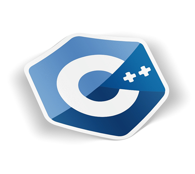

|  |
C++ — как конструктор Lego: вы можете собрать свой замок мечты, а можете кричать от боли, наступая на забытые на полу детали. На нем пишут игры и обучают нейросети, благодаря ему работает поиск Google и роботы торговых бирж.
Кратчайшая история создания C++
Первые версии языка C++ (си-плюс-плюс, еще его называют «си-пи-пи» и «плюсы») появились в начале 1980-х годов. Их создатель — датский программист из компании Bell Laboratories Бьерн Страуструп. Он моделировал распределения вызовов по АТС (автоматическим телефонным станциям).
Тогда у Страуструпа было два типа языков: низкоуровневые и языки на основе Фортрана или Алгола, которые были очень медленными.
Низкоуровневые языки дают полный контроль над ресурсами компьютера: процессором, памятью, периферийными устройствами. Но в таких языках мало готовых инструментов, а значит, любые сложные концепции и функции придется кодить самостоятельно. В языках высокого уровня уже есть все необходимые абстракции.
Страуструп объединил возможности объектно-ориентированного С и языка Simula, основанного на Алголе. Главное привнесенное в C новшество — классы, основной элемент в объектно-ориентированном программировании, содержащий в себе данные и код, который ими управляет.
Так появился «C с классами» или «новый C», который в 1983 году получил свое окончательное название — C++. «++» — это оператор, который означает «добавить единицу». То есть к возможностям языка C добавили еще одну.
Да, если вы хотите разрабатывать сложные продукты и сервисы. Опытные C++-программисты — это разработчики ИИ, беспилотных автомобилей, нейронных сетей, банковских, поисковых и ГИС-систем, операционных систем, микроконтроллеров, браузеров, серверов и видеоигр.
Основные области использования C++
C++ — производительный язык, он помогает дорожным картам в GPS не тупить и строить оптимальные маршруты, любимым играм — не лагать и выдавать максимальное качество с выкрученными до предела настройками графики, банковским сервисам — быть круглосуточными, а переводам — моментальными.
Производительность — важная характеристика любой компьютерной игры. Counter-Strike, StarCraft: Brood War, Diablo I, World of Warcraft — все они появились давно и были написаны на C++, как и операционные системы консолей Xbox и PlayStation, ядра популярных игровых движков Unreal Engine или Unity, на базе которых сделано огромное количество 3D-игр, симуляторов, шутеров и стратегий.
Все потому, что на C++ можно использовать объектно-ориентированное программирование, а когда понадобится — обратиться к низкоуровневым возможностям языка, позволяющим хорошо оптимизировать игру под конкретные платформы и очень эффективно производить расчеты для графики. По этой же причине C++ применяется в графических редакторах (Adobe Photoshop).
Все потому, что на C++ можно использовать объектно-ориентированное программирование, а когда понадобится — обратиться к низкоуровневым возможностям языка, позволяющим хорошо оптимизировать игру под конкретные платформы и очень эффективно производить расчеты для графики. По этой же причине C++ применяется в графических редакторах (Adobe Photoshop).
Благодаря распараллеливанию (одновременному выполнению большого количества несложных математических операций) язык подходит для биткоинов и нейросетей. Первые можно майнить на C++, вторые — обучать: большинство библиотек для глубокого обучения (TensorFlow, Caffe, Shogun, Pytorch C++ API и т.д.) используют C++-код CUDA и OpenCL.
C++ незаменим для высоконагруженных приложений, его используют для разработки поисковых движков, роботов торговых бирж, систем управления базами данных и маршрутизации сетевого трафика.С помощью C++ Mozilla Corporation разработала opensource-браузер Firefox, была создана Amadeus — система электронного бронирования авиабилетов, гостиниц, круизных туров и проката автомобилей (через нее проходит 5000 транзакций в секунду, более миллиарда транзакций ежедневно), благодаря C++ работают Яндекс.Поиск и поисковый движок Google.
Плюсы
Минус
Высокий порог входа. Решения об изменениях в C++ принимают на заседаниях комитета, участие в которых формально может принять любой разработчик. Но отправляться на такие собрания в другую страну за свой счет трудно, поэтому большинство участников — представители крупных IT-корпораций, таких как Google, Яндекс. А вот представителей интересов студентов или стартапов немного. Поэтому эксперты могут принять концепции, которые им кажутся очевидными, а для остальной аудитории они будут сложными.
Сложно, но реально. C++ — достаточно серьезный язык, к нему требуется осознанный подход. Желательно иметь общие представления о том, что такое программирование, как устроено «железо» и как работает операционная система.
Программируя на C++, нужно держать в голове сразу много нюансов: отслеживать типы данных, контролировать выделение и освобождение памяти. Сейчас появляется все больше средств, которые перекладывают эти обязанности на сам язык. Уже на этапе написания кода современные IDE (среды разработки) помогают следить за соблюдением стандартов, отлавливают большое количество ошибок, не всегда очевидных человеку без глубокого знания языка, автоматизируют процесс написания большого объема кода с помощью типовых конструкций.
C++ очень полезен в качестве фундамента для обучения. Начиная свой путь с изучения С, а затем C++, вы получаете качественные знания основ программирования, ООП, структур данных и алгоритмов — всего того, что должен знать любой программист независимо от языка, на котором он специализируется.
#include
<iostream>
using namespace
std;
int
main() {
cout <<
"Hello World!"
<< endl;
return
0;
}